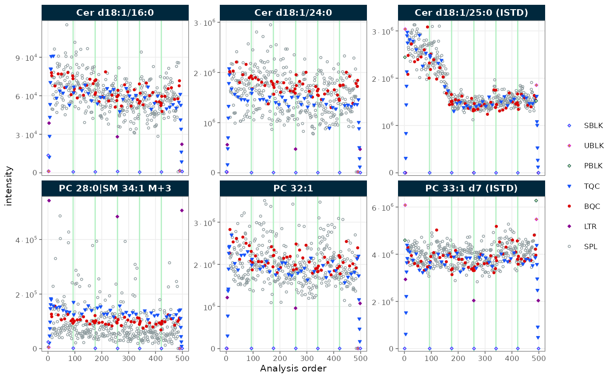
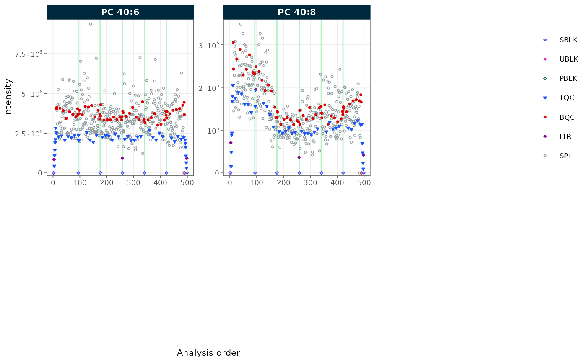
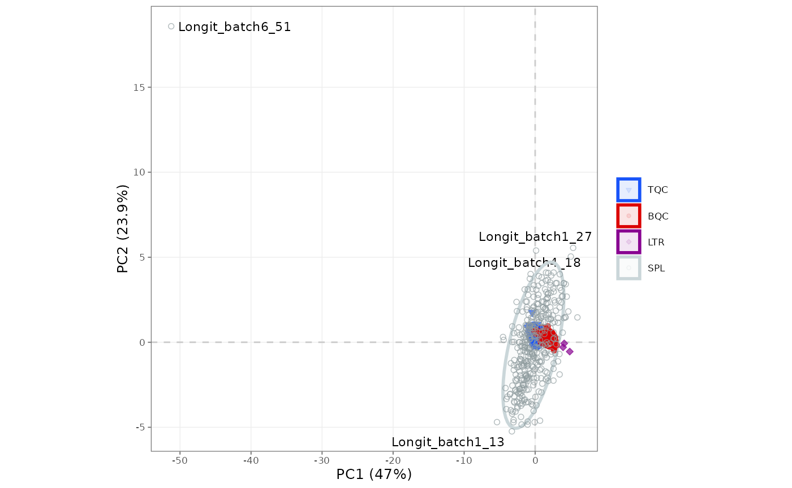

Introduction to R, Quarto, and MRMhub
Source:vignettes/articles/tutorial-13-intro-to-r-quarto-mrmhub.Rmd
tutorial-13-intro-to-r-quarto-mrmhub.RmdA MRMhub analysis is written as a document that mixes prose with the R code that produces the results, so the report and the analysis are one file. This tutorial assumes no prior experience with R or Quarto. It starts from an empty computer, installs the software, sets up a project, and then runs a complete analysis of the bundled demonstration data — importing, normalizing, plotting, and exporting — using MRMhub functions alone, without any custom R code. After working through it you can open a fresh Quarto document and reproduce the same workflow on your own data.
1. Install R and an editor
Two pieces of software are needed. R is the language the analysis runs in; an integrated development environment (IDE) is the editor you write and run it in.
- Install R from CRAN (newest version). Pick the download for your OS and accept the defaults.
- Install an IDE. RStudio is the most common choice and the one this tutorial follows. Positron is a great alternative built on VS Code.
With R and RStudio installed, open RStudio and install MRMhub from
the console (the bottom-left pane). The first line installs
pak, a package installer; the second uses it to fetch
MRMhub and its dependencies:
if (!require("pak")) install.packages("pak")
pak::pak("SLINGhub/MRMhub")If the installation reports an error, the Installation guide lists the common causes (a missing compiler on Windows or macOS, a firewall blocking the download) and their fixes.
2. Create a Quarto project
A project keeps everything for one analysis — data, code, and results — in a single folder that the IDE treats as a unit. In RStudio, choose File → New Project → New Directory → Quarto Project, give it a name, and create it. Quarto’s project documentation covers the dialog in detail.
Inside the new project, add two folders to keep raw inputs separate from generated results — the convention MRMhub’s own workflows follow:
my_study/
├── data/ # raw INTEGRATOR output and metadata files
├── output/ # exported CSVs, PDFs, and reports
└── analysis.qmd # this documentA Quarto document (.qmd) is the home for the workflow:
it interleaves explanatory text with code, documenting each decision
alongside the result it produces.
3. Add text and code
A .qmd file is plain text with two kinds of content.
Prose is written in Markdown — the same ordinary syntax
used across the web, where # starts a heading,
**bold** sets bold text, and - begins a list
item. Code lives in chunks: R code fenced
between ```{r} and ```. In RStudio, Insert
→ Code Chunk (or Ctrl/Cmd + Alt + I) adds an empty one.
Some explanatory text describing the next step.
``` r
1 + 1
[1] 2
```
More text explaining what comes next, then a second chunk that builds on the first.
``` r
2 + 2
[1] 4
```The word after r — first-step,
second-step above — is an optional label naming the
chunk.
RStudio offers two ways to edit a .qmd: the
Source editor shows the raw Markdown, and the
Visual editor a formatted, word-processor-like view.
Both edit the same file; Quarto’s authoring
guide introduces both.
A chunk’s behaviour is set by cell options — lines
at the top of the chunk, each prefixed with #|, written as
#| option: value. A handful cover almost every need in an
analysis document:
-
#| echo: false— run the chunk but hide its source code, showing only the result. -
#| eval: false— show the code without running it (useful for an export step you don’t want re-run on every render). -
#| message: true— keep the chunk’s messages, including MRMhub’s coloured step-by-step console feedback;#| warning: falsehides warnings. -
#| fig-width:and#| fig-height:— the width and height of a figure, in inches. Set them per chunk here, or once for the whole document in the YAML header; Quarto workflows explains how these interact with MRMhub’s plot sizing.
The Quarto documentation is the complete reference.
4. Preview and run code
There are two distinct actions. Running a chunk executes its code immediately and shows the result inline, right beneath the chunk. Each chunk carries a small toolbar at its top-right: the green ▶ arrow runs that chunk, the ⬇ beside it first runs every earlier chunk, and the ⚙ opens the chunk’s options. Pressing Ctrl/Cmd + Shift + Enter with the cursor inside the chunk does the same as ▶. Rendering turns the whole document into a finished HTML (or PDF) report: click the 📄 Render button in the editor toolbar to run every chunk in order and assemble the output. The Preview that opens updates on each render, so the report stays in step with the code.
While developing an analysis, run chunks one at a time to check each step; render at the end to produce the shareable report.
5. The setup chunk
The first chunk of an analysis loads the packages and sets defaults
that apply throughout. Loading MRMhub makes its functions available;
mrmhub_enable_cli_color() colours the console messages in
the rendered report; and mrmhub_set_plot_defaults() sets a
house font size and resolution for every figure, so individual plots
need not repeat them.
library(mrmhub)
mrmhub_enable_cli_color()
mrmhub_set_plot_defaults(font_base_size = 8)6. Load the data
Every analysis begins with a MRMhubExperiment — the
container that holds the data and every result computed from it (see The MRMhubExperiment object). We
create an empty one and import the demonstration dataset bundled with
the package. Using system.file() locates that file wherever
the package is installed, so the code runs unchanged on any machine; in
your own project you would instead give the path to a file in
data/.
demo_file <- system.file("extdata", "MRMhub_demo.tsv", package = "mrmhub")
mexp <- MRMhubExperiment()
mexp <- import_data_mrmhub(
mexp,
path = demo_file,
import_metadata = TRUE)✔ Imported 499 analyses with 28 features.ℹ feature_area selected as default feature intensity. Modify with `set_intensity_var()`.✔ Analysis metadata associated with 499 analyses.✔ Feature metadata associated with 28 features.Setting import_metadata = TRUE reads the sample and
internal-standard annotations embedded in the INTEGRATOR file at the
same time. MRMhub reads several other formats; Importing analytical data has a
decision flowchart and the full importer reference.
7. Process the data
The core processing step normalizes each feature to its assigned
internal standard, which corrects for extraction and injection
variation. The result is stored in the
feature_norm_intensity variable, leaving the raw
intensities untouched.
mexp <- normalize_by_istd(mexp)✔ 19 features normalized with 9 ISTDs in 499 analyses.This is the shortest useful pipeline. A real study usually adds drift
and batch correction and QC filtering in a set order; A basic MRMhub workflow and
Drift and batch
correction build on the object from here. If you would rather not
write this code by hand, build_workflow() opens an
interactive application that validates your data and metadata and
generates an equivalent Quarto document to download (see Build a workflow without
code).
8. Check the processing status
mrmhub_status() prints a full report of the object: what
was imported, which steps have run, and which stages still lie ahead. It
is the quickest way to confirm the experiment is in the state you expect
before moving on to plots and export.
mrmhub_status(mexp)── MRMhubExperiment ────────────────────────────────────────────────────────────Title:Last step: ISTD-normalized data | signal: feature_area── Samples (499 analyses, 6 batches) ──• Study samples & QCs (488): TQC 48, BQC 59, LTR 3, SPL 378• Blanks & other (11): SBLK 7, UBLK 2, PBLK 2── Features (28) ──• Analytes: 19 Internal standards: 9• Quantifiers: 28 Qualifiers: 0── Metadata ──• Analyses/samples: ✔ (499) Features/analytes: ✔ (28) Internal standards: ✖• Response curves: ✖ Calibrants/QC concentrations: ✖ Study samples: ✖
Interferences: ✖── Processing Status ──• Isotope / interference corrected: ✖• ISTD normalized: ✔ Quantitated: ✖• Drift corrected variables: ✖• Batch corrected variables: ✖• QC metrics calculated: ✖ Feature filtering applied: ✖── Exclusion of Analyses and Features ──• Analyses manually excluded (`analysis_id`): ✖• Features manually excluded (`feature_id`): ✖9. Plot signals across the run
A run-scatter plot shows each feature’s signal against injection order — a quick check for trends or outliers. We plot the raw peak areas for two lipid classes, selected by a regular expression on their names.
plot_runscatter(
mexp,
variable = "intensity",
include_feature_filter = "^(Cer|PC)",
rows_page = 2, cols_page = 3)
Figure 1. Raw peak areas of Cer and PC features across injection order.

Figure 1. Raw peak areas of Cer and PC features across injection order.
To save the plot to a file instead of showing it,
plot_runscatter() can write a multi-page PDF — one page per
grid of features — directly to output/:
plot_runscatter(
mexp,
variable = "intensity",
include_feature_filter = "^(Cer|PC)",
rows_page = 2, cols_page = 3,
output_pdf = TRUE,
path = "output/runscatter.pdf")10. Run a PCA
A principal-component analysis (PCA) summarises all features at once, placing each sample in a plane so that similar samples fall close together — useful for spotting QC clustering or outliers.
plot_pca(mexp, variable = "norm_intensity")
Figure 2. PCA of the normalized intensities, coloured by QC type.
To keep a copy of the figure, pipe it into save_plot().
Because save_plot() returns the plot visibly, one line both
writes the PDF and still renders the figure in the report;
width and height are in millimetres:
plot_pca(mexp, variable = "norm_intensity") |>
save_plot("output/pca.pdf", width = 180, height = 120)Giving save_plot() a path with no extension and
format = c("pdf", "png") writes both formats at once; Visualisation functions lists
the plots available at each stage.
11. Export results
Finally, export the results for downstream use. A single-variable CSV
gives a plain table of normalized intensities, and
save_report_xlsx() writes a multi-sheet Excel workbook
holding every data table and QC metric in one file.
save_dataset_csv(
mexp,
path = "output/norm_intensities.csv",
variable = "norm_intensity")
save_report_xlsx(
mexp,
path = "output/report.xlsx",
filtered_variable = "norm_intensity")With these chunks written, click Render once more:
RStudio runs the whole analysis top to bottom and produces a
self-contained report, with the CSV, PDFs, and Excel workbook waiting in
output/.
Next steps
- A basic MRMhub workflow: the full pipeline with quantification and QC filtering
- Drift and batch correction: correcting run-order and batch effects
- Exploring QC: RunScatter and PCA: QC visualisation in depth
- Quarto workflows: rendering, figure sizing, and report options